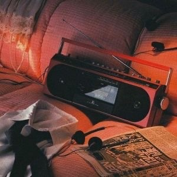

Pop is one of the most popular music genres within the younger generations, but it’s still often loved among older generations too.
Pop songs are all about uplifting rhythms and catchy melodies. The lyrics used in pop music are usually not that hard to understand and remember, making pop songs easy to sing along to.
Some of the most notable pop songs across history include Thriller by Michael Jackson, Baby One More Time by Britney Spears, Shape Of You by Ed Sheeran, and Rolling in the Deep by Adele.

A type of music, usually played on electronic instruments, that is popular with many people because it consists of short songs with a strong beat and simple tunes that are easy to remember. Pop music is often simply called pop. The term "pop song" was first used in 1926, in the sense of a piece of music "having popular appeal". Hatch and Millward indicate that many events in the history of recording in the 1920s can be seen as the birth of the modern pop music industry, including in country, blues, and hillbilly music.
What are 4 characteristics of pop music?
They have a good rhythm, a catchy melody, and are easy to remember and sing along to. They usually have a chorus that's repeated several times and two or more verses. Most pop songs are between two and five minutes long, and the lyrics are usually about the joys and problems of love and relationships.